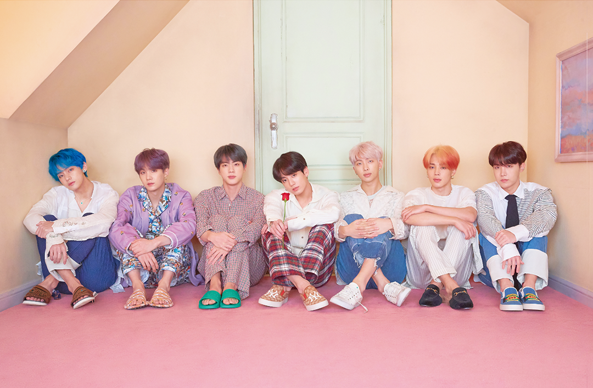

Now for the moment you've all been waiting for... BTS! Much has already been written about the seven members of BTS—Jin, Suga, J-Hope, RM, Jimin, V, and Jungkook. All seven were born in South Korea and are in their twenties. After debuting in 2013 from a relatively unknown entertainment company, BTS has become arguably the biggest starts in the world. Seriously. Some have even gone so far as to compare them to the second coming of the Beatles. What's more is that BTS has a combined YouTube view count of over 11 billion views, with their videos being played an average of over 8 million times per day (stats courtesy of kworb.net). The streaming statistics of their music from other services no doubt far surpasses these numbers. Let that sink in for a moment. It's very likely that there is no other artist in the world (nor indeed in history) that has achieved such popularity or gained such wide acclaim.
Currently BTS's most viewed video on YouTube is their breakthrough hit 'DNA'. If you somehow haven't heard it before, or even if you have give it a listen below.
In our opinion this song 'DNA', which was released in 2017, represents peak form for K-Pop. The truth is that K-pop is so much more than music. Just as rising Asian economies have found success building off of products and infrastructure first produced in the West, the Koreans have, in a sense, perfected pop music. They've taken what Michael Jackson and many other western stars created and ran with it.
First just look at the colors in this video. It's nothing short of psychedelic beauty. Koreans have always loved bright colors (as we'll see in the food chapter) and these bright colors are clearly part of the appeal of K-pop. This extends even to the idols themselves with many having their hair died bright colors or wearing bright colored lenses. This in addition to their excellent fashion.
Next notice the immaculate and addictive melody and beat. While it may be said that some K-pop songs feel 'recycled' the producers of DNA really hit it out of the park with this one. The tune whistled at the beginning continues throughout the song and is incredibly addictive.
Finally look at the choreography. Koreans know how to move their bodies in a way that is somehow cute, inviting, and cool all at the same time. The BTS members play their audience perfectly as they intermittedly glare, smile, pout, and smolder into the camera. It's common knowledge at this point that countless hours of practice go into every K-pop music video. Because the group members have now shared nearly half of their lives together they have become like brothers. Their mental synchronization and friendship is on clear display. This is the hardest part for the West to replicate as this type of comradery is built into Korean culture. That's why western labels are struggling to come up with any response to the Korean pop phenomenon.
If you, like us, can't get enough of BTS then here's some more videos to whet your whistle. The genuine sincerity of the members and their heartfelt lyrics are a lot of what brought them the success they have now. Many of the song lyrics aren't about romance but rather feature themes like mental health, personal independence, love of self, or making your own way in the world. The videos usually include English translation, so definitely turn on the subtitles.